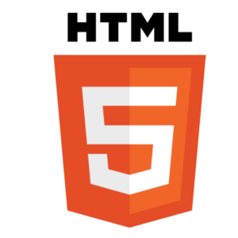

Alabama OT
Servidor Open Source de Tibia
Aliar a experiência de jogar e desenvolver o próprio jogo

Gameplay
- Old School PvP
- Mapa próprio e mais compacto que o Tibia original
- NPC perto da entrada da hunt que compra o seu loot
- Mistura de quests personalizadas e do Tibia original
- Não envolver dinheiro real com a economia do jogo
Serviços oferecidos para cobrir os custos do servidor
- Outifits e Mounts de efeito cosmético
- Criação de uma casa personalizada
- Criação de uma hunt personalizada
- Doações no Patreon